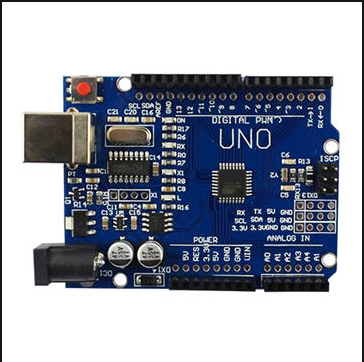
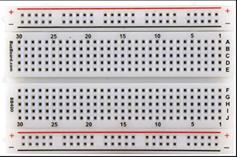
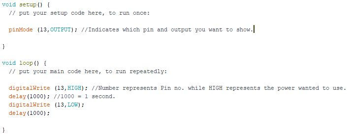
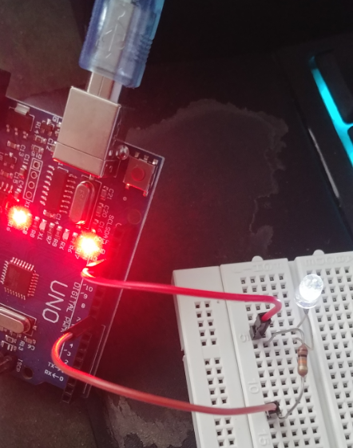
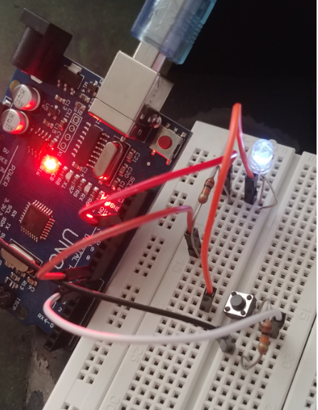
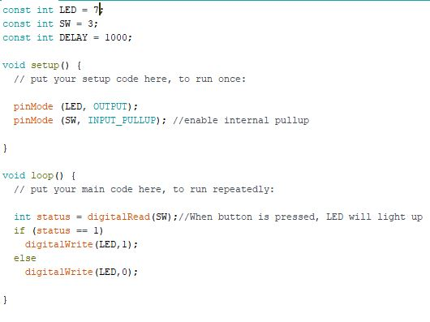

We are going to be using the Arduino software and board to create circuits that can do anything you want so long as you program it. What this allows the users to do is that the user can create small machines with the small circuits since the arduino board isn't that big. But we have to start from some where.
The basics first is to identify the arduino board and all its components.
As shown, the board has slots for cables and it indicates whether there's power connected to it. It is connected through USB and it allows the user to upload their programmed files onto it so that the board can run those commands. The slim black slots allow the user to connect cables that run to an external board known as the breadboard. There the user can wire their circuits to what they have programmed.
Now with the boards settled, it's time to move on to the circuits.
The first circuit is a simple one in which it shows a bulb being lighted up. Using some simple coding and basic circuit cables, resistor and a LED bulb, I am able to create said circuit.
 What this basic code does is that every second, the LED bulb turn on and off. By setting your desired pin number and telling what the pin number should do, the user is allowed to control what that pin should do. There are many more possibilities with this.
 With this exercise, as the code shows when the button is pressed the bulb will light up. Setting up which pin should the power start from, running through resistors to the buttons than the bulb with another resistor connected to it.